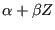
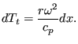

Next: Restrictor, User
Up: Fluid Section Types: Gases
Previous: Restrictor, Entrance
Contents
Properties: adiabatic, not isentropic,directional,  -inlet based restrictor
-inlet based restrictor
An exit element is used to model the exit from a gas pipe into a large
chamber. For an exit the value of  is 1. It is described by the following constants (to be specified in that order on
the line beneath the *FLUID SECTION, TYPE=RESTRICTOR
EXIT card):
is 1. It is described by the following constants (to be specified in that order on
the line beneath the *FLUID SECTION, TYPE=RESTRICTOR
EXIT card):
- cross section of the exit .
- not used (internally: set to 100,000 as downstream section)
- hydraulic diameter defined by  where  is the
perimeter of the cross section.
- number of the upstream element; this element must be of type GAS PIPE FANNO
- oil mass flow in the restrictor (only if the OIL parameter is used to define
the kind of oil in the *FLUID SECTION card)
- not used (internally: oil material number)
By specifying the parameter LIQUID on the *FLUID SECTION card the loss is
calculated for liquids. In the absence of this parameter, compressible losses
are calculated.
guido dhondt
2018-12-15